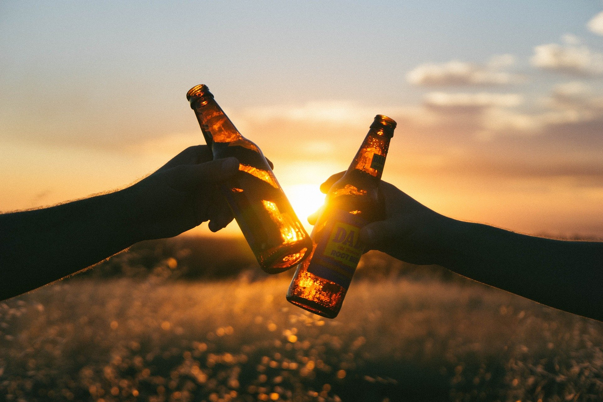

This must stop. We as a community must do something to help stop this.
Whether its schools educating kids about alcohol at an early age. Or making any
of our friends understand the problems and disadvantages of drinking. In most
countries around the world the drinking age is usually about 18 to 19 years old,
but did you know New Zealand does not have any legal drinking age? In this
country you can drink at whatever age you want but, you must have your
parents verbal confirmation. Most teenagers who have been recently been
introduced to alcohol, do not have their parent's approval and usually do not
plan to tell their parents. This presents many difficulties, since the parent
doesn’t know that their child has been drinking, it may be too late to stop this
before it becomes a serious problem. This is another great reason why kids
should be educated about alcohol and the effects of it before they come to
the age of wanting to try it themselves. Italy holds the title of having the lowest
 drinking age in the world, 16, yet in Italy, the number of minors who binge drink
and abuse alcohol is much less. The reason being that over there kids
have been much more effectively been taught about alcohol and it is socially
acceptable to drink alcohol if you are with your parents.
In conclusion, underage drinking is a problem that we need to stop. People
should know of the idea of why teens give in to alcohol. Knowing this we,
cannot only educate kids but also know why teenagers do this. We should
learn the affects and downsides of drinking and realize why people tell us
about all this. Last, but not least we, as a community, and by ourselves should
support stopping this unnecessary act.